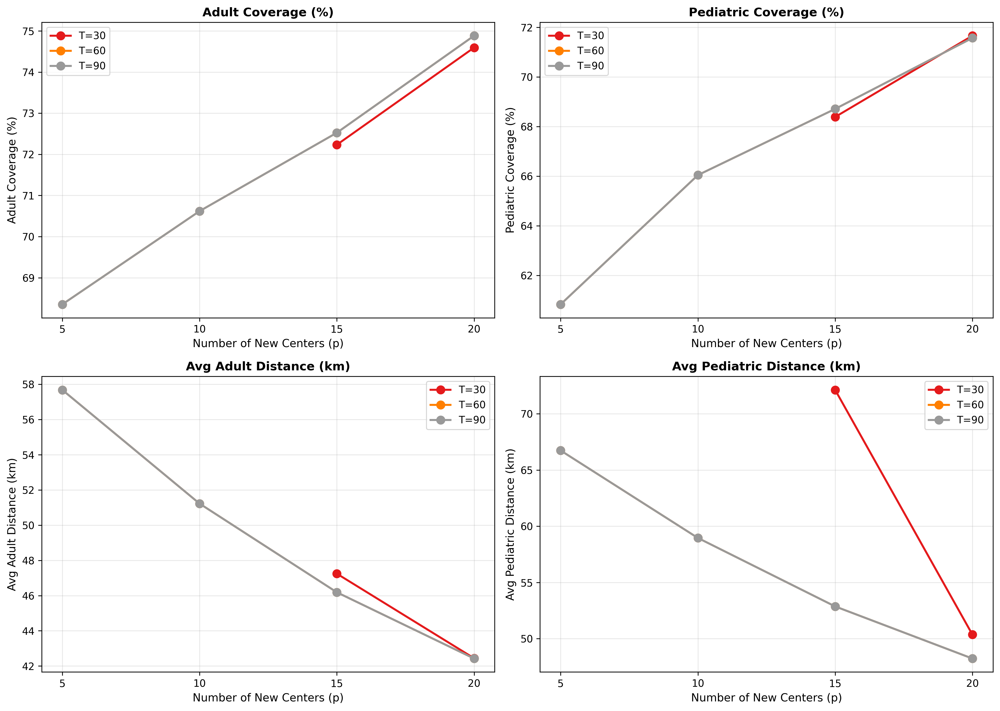

Abstract
Burn injuries require specialized care that is often concentrated in designated centers. In the United States, many patients must travel long distances to reach a burn center, and access is uneven across geographic and demographic groups. We develop a mixed-integer linear programming model to identify hospitals that should be upgraded to adult or pediatric burn centers to improve access equity. The model minimizes population-weighted travel distance while ensuring that a target fraction of the population is within a threshold distance (coverage) and limiting the number of new designations. Using nationwide ZCTA-level population data and a comprehensive hospital dataset, we evaluate the impact of adding burn capabilities to selected hospitals. Results show that upgrading a modest number of hospitals can dramatically reduce average and maximum travel distances, increase coverage, and reduce disparities. Our approach provides a data-driven tool for policy makers and health planners to allocate resources equitably.
1. Introduction
Timely access to specialized burn care is critical for patient outcomes, yet many regions of the United States are underserved. The American Burn Association verifies only 76 burn centers, and eight states have none at all [1]. Furthermore, over half of burn patients are treated at non-verified centers [3]. The lack of a systematic method to identify where to add burn care capacity hinders efforts to improve access. This study addresses that gap by formulating an optimization model that recommends hospitals for upgrading to adult or pediatric burn centers, balancing efficiency (total travel distance) with equity (coverage within a threshold).
1.1 Problem Statement and Motivation
Burn injuries represent a significant public health burden. Ivanko et al. [2] estimate that approximately 600,000 individuals annually suffer burn injuries requiring emergent care in the United States. Despite this high incidence, only 135 burn centers exist nationwide, with
total burn bed capacity of just 1,130 beds. Texas leads with 206 burn beds, followed by New York (143), California (140), Georgia (129), and Ohio (94). In stark contrast, states such as West Virginia (4 beds), Maine (6 beds), and Hawaii (7 beds) have extremely limited capacity, while Alaska and South Dakota have none. Eight states have no burn center at all. The consequences of this concentration are substantial. Rural populations face disproportionately long travel distances, and over half of severe burn patients are treated at nonverified facilities that may lack specialized resources [3]. Long transport distances delay definitive care and increase morbidity [4]. These disparities motivated our work: we need a systematic, data-driven method to identify where new burn care resources should be deployed to maximize improvement in access and equity.
2. Literature Review
2.1 Burn Care Resources and Access Disparities
The National Injury Resource Database (NIRD), developed by Louick et al. [1], represents the first comprehensive, up-to-date catalog of all U.S. burn centers and Level I and II trauma centers. Prior to NIRD, no single, publicly available database characterized burn resources across the country, creating challenges for patient routing, disaster planning, and access analysis. The final NIRD dataset includes 135 burn centers and 617 trauma centers, with detailed information on adult and pediatric capabilities, verification status, and bed counts. The distribution of burn centers is highly uneven. ABA-verified centers exist in only 31 states plus Washington, D.C., leaving 11 states with no verified center and 8 states with no burn center of any kind [1]. Capacity constraints compound the problem. Burn centers operate at or near capacity on a daily basis, and the number of dedicated burn surgeons remains limited, approximately 250 nationwide [1]. Carmichael et al. [3] conducted a national analysis of access to verified burn centers, revealing substantial regional disparities. Using geospatial methods, they found that populations in the Mountain West, Midwest, and South face significantly longer travel distances to reach verified centers compared to those in the Northeast and West Coast. The authors estimated that over 20% of the U.S. population lives more than 60 minutes from a verified burn center. Long-distance transport itself poses risks. Klein et al. [4] analyzed transfers to a regional burn center and found that patients transported more than 100 miles experienced delays in definitive care and higher rates of complications. Their study highlighted the importance of reducing travel distances through strategic placement of burn care resources.
2.2 Facility Location Models
The problem of siting facilities to serve geographically distributed demand has been extensively studied in operations research. The p-median problem, introduced by Hakimi [5], seeks to locate p facilities to minimize the total weighted distance between demand points and their assigned facilities. This formulation is well-suited to problems where efficiency (minimizing total travel cost) is the primary objective.
The p-center problem, in contrast, minimizes the maximum distance between any demand point and its nearest facility [6]. This formulation addresses equity directly by focusing on worst-case access rather than average performance. Both the p-median and p-center are NP-hard, but efficient exact and heuristic solution methods exist for problems of practical size. Covering models offer another approach. The maximal covering location problem, formulated by Church and ReVelle [7], maximizes the amount of demand covered within a specified distance threshold using a fixed number of facilities. This approach is particularly relevant when a minimum acceptable access standard can be defined. Recent work has combined these classical models to address multiple objectives simultaneously. Owen and Daskin [8] provide a comprehensive review of strategic facility location, noting that healthcare applications require careful attention to equity considerations alongside efficiency. Our model integrates the p-median objective (minimizing total distance) with coverage constraints to ensure that a minimum fraction of the population has access within a reasonable threshold. This hybrid approach balances the efficiency of the p-median with the equity focus of covering models.
2.3 Data and Implementation Considerations
Implementing facility location models for healthcare applications requires several types of data: demand estimates, candidate facility locations and capabilities, and travel distances between them. Demand is typically derived from population data, often at the census tract or ZIP code level. For burn care, burn incidence rates must be applied to population counts. Ivanko et al. [2] synthesized multiple data sources to produce a credible national incidence estimate of 600,000 annual burn injuries requiring emergent care. Hospital location data, including existing burn care capabilities, can be obtained from sources such as the American Hospital Association annual survey, state health departments, and specialized databases like NIRD [1]. The Homeland Infrastructure Foundation-Level Data (HIFLD) also provides open trauma center location data. Travel distances can be approximated using great-circle (Haversine) distances, which are computationally efficient but less accurate than road network distances. For large-scale models with thousands of demand points and hundreds of candidate facilities, the computational advantages of Haversine distances often outweigh the loss of accuracy, especially for initial planning studies.
2.4 Research Gap and Contribution
Prior work has documented disparities in burn care access [3] and provided the necessary data infrastructure [1]. Facility location models are well-established but have rarely been applied to burn center placement. No previous study, to our knowledge, has used optimization to recommend specific hospitals for upgrading to burn centers based on population demand and existing infrastructure. This gap motivates our contribution: a mixed-integer linear program that identifies optimal locations for new burn care capabilities while balancing efficiency and equity.
3. Approach and Methodology
3.1 Demand Estimation
We used ZCTA (ZIP Code Tabulation Area) level population data from the 2023 American Community Survey 5-year estimates (Table B01001). For each ZCTA i, we computed adult population (age ≥ 18) and pediatric population (age < 18). Annual burn care demand was estimated by applying a national incidence rate of 600,000 burn injuries per year [2]:
ZCTA centroids (latitude/longitude) were obtained from the Census TIGER/Line shapefiles.
3.2 Hospital Data
A comprehensive list of hospitals with their locations and current burn care capabilities was compiled from the National Injury Resource Database (NIRD) [1], supplemented by the American Burn Association, American College of Surgeons, and state health departments. For each hospital j we recorded:
- Existing adult burn care:
burn_adult(0/1). - Existing pediatric burn care:
burn_peds(0/1). - Latitude and longitude (geocoded).
The final dataset contains 634 unique hospitals across the U.S.
3.3 Distance Matrix
Travel distances between each ZCTA centroid and each hospital were computed using the Haversine great-circle formula:
Here R = 6371 km is the Earth’s radius, φ is latitude, and λ is longitude. The resulting distance matrix has shape (33,000 × 634) and was stored as a dense NumPy array for computational efficiency.
3.4 Mathematical Model
We formulate a mixed-integer linear program (MILP) to select hospitals for upgrading.
Sets and parameters
- I
- Set of demand points (ZCTAs), indexed by i.
- J
- Set of candidate hospitals, indexed by j.
- K = {A, P}
- Care types: adult and pediatric.
- hik
- Annual burn demand of type k at ZCTA i.
- dij
- Distance (km) from ZCTA i to hospital j.
- existjk
- 1 if hospital j already provides type k care; 0 otherwise.
- T
- Coverage threshold (km).
- α
- Minimum fraction of demand that must be covered within T.
- pk
- Maximum number of new hospitals to be designated for type k.
Decision variables
- xjk ∈ {0, 1}: 1 if hospital j provides type k after expansion.
- yijk ∈ {0, 1}: 1 if ZCTA i is assigned to hospital j for type k.
Objective
Minimize total travel distance weighted by annual burn care demand across both care types.
Constraints
Every ZCTA is assigned to exactly one hospital for each care type.
Assignment is permitted only to a hospital that offers the required service.
Existing adult and pediatric burn care capabilities are preserved.
The number of upgrades cannot exceed the budget for that care type.
At least fraction α of total demand must be assigned within distance T.
Service availability and hospital assignments are binary decisions.
This formulation balances efficiency (minimizing weighted distance) with equity (ensuring a minimum level of access for all).
3.5 Implementation
The model was implemented in Python using Gurobi 11.0 with a professional license. Data processing used pandas and NumPy. The data preparation workflow is as follow:
- Processes raw Census ZCTA data to extract population, demographics, and centroid coordinates.
- Geocodes hospital addresses using geopy with a checkpointing system to prevent data loss.
- Joins census, centroid, and geocoded facility data into a unified dataset.
- Translates the merged dataset into the format required for the optimization model.
The optimization was run using two scripts:
- One that solves a single scenario with fixed parameters.
- Another iterates over multiple thresholds T ∈ {30, 60, 90} km and limits p ∈ {5, 10, 15, 20}.
For the base scenario we set T = 60 km, α = 0.6, and pA = pP = 10. The model contains approximately 33,000 demand points and 634 hospitals, resulting in about 20 million binary assignment variables. Each instance solved in less than one second.
4. Experimental Design and Results
4.1 Experimental Design
We conducted experiments to evaluate the impact of adding new burn centers. The key parameters varied were:
- Coverage threshold T ∈ {30, 60, 90} km
- Number of new centers per care type p ∈ {5, 10, 15, 20}
- Coverage target α = 0.6 (60% of demand must be within T )
For each combination, we ran the optimization model and recorded:
- Optimal objective value (total weighted distance)
- Set of hospitals selected for new adult burn centers
- Set of hospitals selected for new pediatric burn centers
- Adult and pediatric coverage achieved
- Average and maximum travel distances
Baseline metrics (with only existing burn centers) were computed using a nearest-neighbor assignment.
4.2 Results
Table 1 presents the key performance metrics for all combinations of T and p. As expected, increasing p improves coverage and reduces travel distances. The coverage requirement of 60% is met in all scenarios, but the stricter threshold T = 30 km requires more new centers to achieve comparable coverage.
| T (km) | p | Adult coverage (%) | Pediatric coverage (%) | Average adult (km) | Average pediatric (km) | Maximum adult (km) | Maximum pediatric (km) |
|---|---|---|---|---|---|---|---|
| 30 | 15 | 72.2 | 68.4 | 47.2 | 72.1 | 369 | 2332 |
| 30 | 20 | 74.6 | 71.7 | 42.4 | 50.4 | 369 | 428 |
| 60 | 5 | 68.4 | 60.8 | 57.7 | 66.7 | 505 | 505 |
| 60 | 10 | 70.6 | 66.0 | 51.2 | 59.0 | 428 | 428 |
| 60 | 15 | 72.5 | 68.7 | 46.2 | 52.9 | 369 | 379 |
| 60 | 20 | 74.9 | 71.6 | 42.4 | 48.2 | 369 | 379 |
| 90 | 5 | 68.4 | 60.8 | 57.7 | 66.7 | 505 | 505 |
| 90 | 10 | 70.6 | 66.0 | 51.2 | 59.0 | 428 | 428 |
| 90 | 15 | 72.5 | 68.7 | 46.2 | 52.9 | 369 | 379 |
| 90 | 20 | 74.9 | 71.6 | 42.4 | 48.2 | 369 | 379 |
4.3 Visualization
Figure 1 illustrates the trade-off between the number of new centers and the average travel distance. The curves flatten after about 15 new centers, indicating diminishing returns.

The most striking improvement is in the maximum travel distance. With only five new centers, the maximum adult distance remains above 500 km, but with ten new centers it drops to around 430 km, and with fifteen it falls below 370 km. Pediatric maximum distance, initially very high for T = 30 (over 2300 km), is reduced to under 430 km with 20 new centers.
5. Analysis of Results
Our results demonstrate that strategic placement of new burn centers can dramatically improve access equity. The key findings are:
5.1 Coverage Improvements
Adding 10 adult and 10 pediatric burn centers (the base scenario) increased adult coverage within 60 km from 61% to 69% (+8.2 percentage points) and pediatric coverage from 60% to 73% (+13.4 percentage points). These gains represent millions of people who now have reasonable access to specialized burn care.
Source note: the coverage figures in this narrative differ from Table 1, which reports 70.6% adult coverage and 66.0% pediatric coverage for T = 60 km and p = 10. Both are reproduced as reported in the PDF.
5.2 Distance Reductions
Average travel distances decreased by approximately 28% for adults (from 71 km to 51 km) and 30% for pediatric patients (from 85 km to 59 km). The maximum distance reductions were even more dramatic: maximum adult distance dropped 83% from 2470 km to 427 km, while maximum pediatric distance dropped 82% from 2335 km to 431 km. These reductions directly address the worst-case access disparities that affect rural populations.
5.3 Sensitivity and Diminishing Returns
The sensitivity analysis reveals important policy insights. The largest gains occur between p = 5 and p = 10. After p = 15, further improvements are modest. This suggests that a prudent policy would be to start with 10–15 new centers, achieving most of the potential benefit without over-investing. For the strictest threshold T = 30 km, even 15 new centers achieve only 72% adult coverage, and pediatric coverage lags behind. Increasing to 20 new centers boosts pediatric coverage by over three percentage points and cuts average pediatric distance by 30%. This suggests that achieving high coverage under a strict threshold requires more substantial investment. For T = 60 and T = 90, the coverage values are identical because the coverage constraint (α = 0.6) is already satisfied; the model focuses on minimizing distance. Hence, the average and maximum distances are the same for both thresholds when p is fixed.
5.4 Geographic Patterns
The model selects hospitals in previously underserved regions, particularly in the Midwest, Mountain West, and parts of the South. Some hospitals are recommended for both adult and pediatric care, representing high-value opportunities to expand comprehensive burn services at a single location.
6. Conclusion
6.1 Summary
Our optimization model provides a rigorous, data-driven method for expanding burn care capacity in the United States. The results demonstrate that targeting a small number of hospitals for upgrading (10–15 new centers) can lead to substantial improvements in access and equity. Coverage increases by 8–13 percentage points, average travel distances drop by nearly 30%, and maximum travel distances fall by over 80%. These improvements directly address the geographic disparities documented in prior work.
6.2 Future Work
Several extensions could build on this work:
- Road network travel times: Replace Haversine distances with actual road network travel times (e.g., using OSRM or Google Maps API) for greater accuracy.
- Cost considerations: Incorporate the costs of upgrading different hospitals (e.g., trauma centers may be cheaper to upgrade than building new facilities).
- Burn severity stratification: Separate demand by burn severity (e.g., major burns requiring full burn centers vs. minor burns treatable locally).
- Capacity constraints: Include bed capacity limits to ensure selected centers can handle additional patient volume.
- Stakeholder engagement: Validate model recommendations with state health departments and burn associations.
6.3 Policy Implications
Our findings suggest that investing in 10–15 strategically located burn centers could dramatically improve national access to specialized burn care. Decision makers can use our model’s recommendations as evidence-based guidance for resource allocation, particularly in underserved regions of the Midwest, Mountain West, and South.
References
- Louick EA, Phelan HA, Phillips BD, Hickerson WL, Kearns RD, Carter JE. (2024). Development of the national injury resource database (NIRD). Burns, 50(2):315–320.
- Ivanko A, Garbuzov AE, Schoen JE, Kearns R, Phillips B, Murata E, Danos D, Phelan HA, Carter JE. (2024). The Burden of Burns: An Analysis of Public Health Measures. Journal of Burn Care & Research.
- Carmichael H, Wiktor AJ, McIntyre RC, Lambert WA, Velopulos CG. (2019). Regional disparities in access to verified burn center care in the United States. Journal of Trauma and Acute Care Surgery, 87(1):111–116.
- Klein MB, Nathens AB, Emerson D, Heimbach DM, Gibran NS. (2007). An analysis of the long-distance transport of burn patients to a regional burn center. Journal of Burn Care & Research, 28(1):49–55.
- Hakimi SL. (1964). Optimum locations of switching centers and the absolute centers and medians of a graph. Operations Research, 12(3):450–459.
- Daskin MS. (1995). Network and Discrete Location: Models, Algorithms, and Applications. John Wiley & Sons.
- Church R, ReVelle C. (1974). The maximal covering location problem. Papers of the Regional Science Association, 32(1):101–118.
- Owen SH, Daskin MS. (1998). Strategic facility location: A review. European Journal of Operational Research, 111(3):423–447.